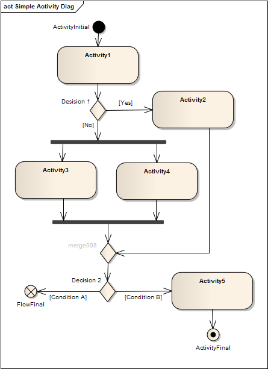

“The UML Activity Diagram is a behavioural modelling technique, used to analyse aspects of dynamic behaviours within a defined
process. The diagram is part of the analysis model and displays a sequence of activities or workflow. They are often used
to model business processes, business rules and software processes”
activity diagram example
An example of an elaborated Activity Diagram
The purpose of a UML Activity Diagram is to elaborate the order of Activities within a process and their business logic, as
well as the Flows between Activities, that may be undertaken by different Actors (human and system roles), whilst also representing
any decision logic.
UML Activity Diagrams are maintained in a named model package, which contains:
|
• |
Elements (e.g. Activity, Decision, Merge etc.,) — denoting the processing actions. |
|
• |
Activity Diagrams are also further elaborated using:
|
– |
Flows (e.g. Control, Object and Concurrent) — these define:
|
♦ |
The relationship between Activities. |
|
♦ |
The start / end for Activity processing. |
|
|
– |
‘Event’ Configurations (e.g. ‘Interrupt’ or ‘Receipt’) — define predictable activities that may interrupt the normal processing flow |
|
– |
Swimlanes — to denote human or system roles. |
|
The construction of a UML Activity Diagram, is further defined by its
Core Notations.
- UML Activity Diagrams and UML State Diagrams have very similar notations; their different applications and interpretations
should be clearly understood by Model Authors.
Types of Activity Diagram ArtefactsTypes of Activity Diagram Artefacts
The Activity Diagram Artefacts currently defined for use by the Data Products Analysis Methodology include: